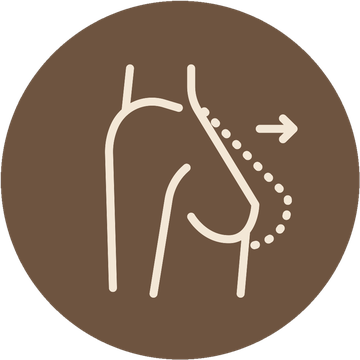
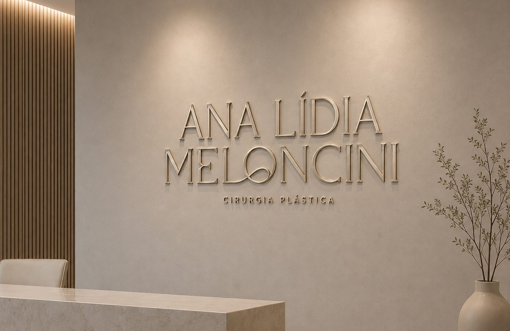
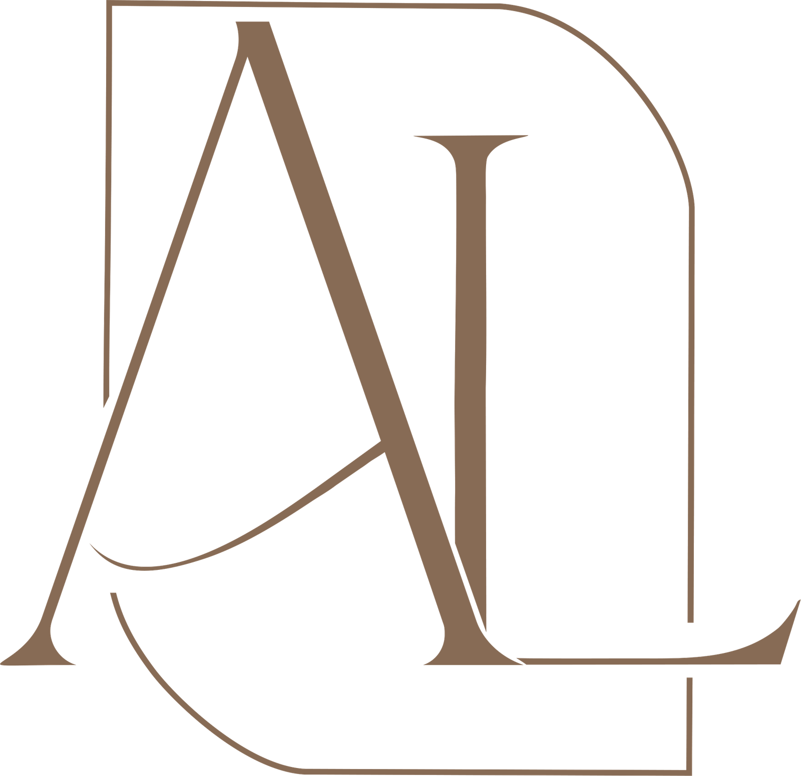
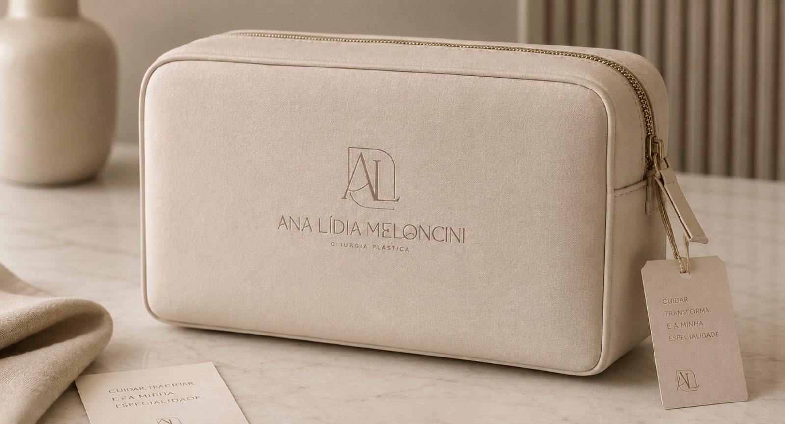
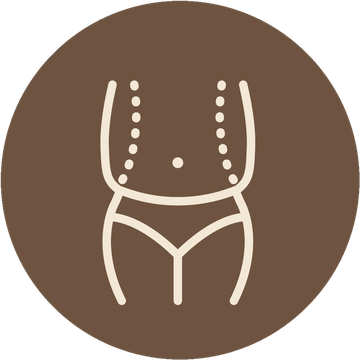
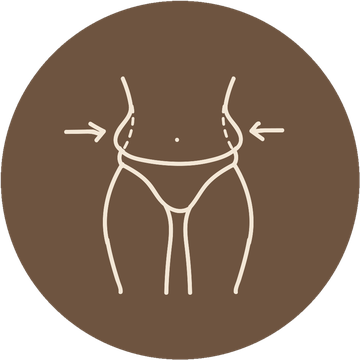
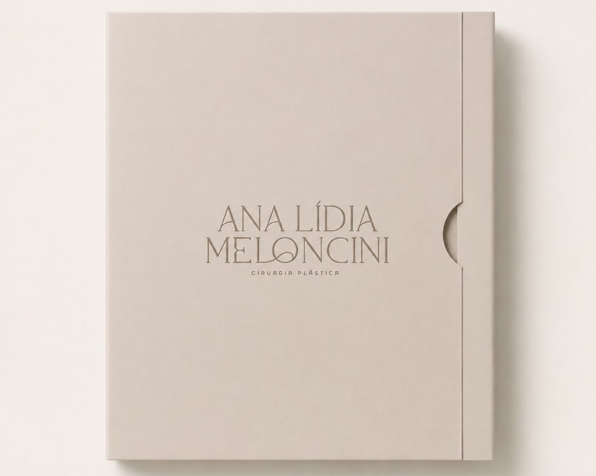
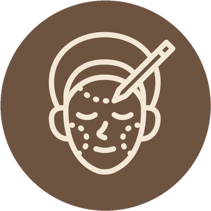
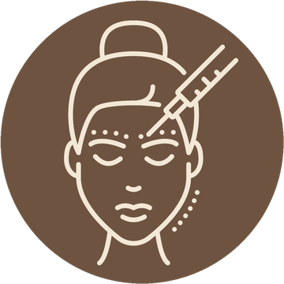
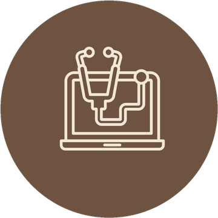

Mama
Aumento, redução, mastopexia e combinações. Volume e formato proporcionais ao corpo, com cicatrizes planejadas para ficarem discretas.
Saiba maisAlto padrão técnico com o acolhimento de quem entende exatamente o que você deseja transformar.
CRM 94.951 · RQE 93868



Cirurgiã plástica com foco em contorno corporal e cirurgia mamária. O trabalho parte de um princípio simples: resultado natural, proporcional ao corpo e fiel à identidade de cada paciente.
Atendimento direto e objetivo — você entende o procedimento, os cuidados e o que esperar antes de decidir.
Título de especialista em Cirurgia Plástica, com registro RQE 93868.
Anos de prática cirúrgica concentrada nas categorias de destaque.
CRM 94.951 — Conselho Regional de Medicina do Estado de São Paulo.
Acolhimento, segurança e informação em cada etapa do processo.

Aumento, redução, mastopexia e combinações. Volume e formato proporcionais ao corpo, com cicatrizes planejadas para ficarem discretas.
Saiba mais
Abdominoplastia para correção de flacidez de pele e da musculatura, indicada especialmente após gestação ou grande perda de peso.
Saiba mais
Refinamento do contorno com remoção de gordura localizada e definição das curvas, sempre a partir da estrutura de cada paciente.
Saiba mais
Os dois procedimentos que mais transformam a silhueta — muitas vezes combinados em um mesmo planejamento cirúrgico.
Aspiração de gordura localizada e escultura das curvas, com atenção à proporção entre cintura, quadril e dorso.
Remoção do excesso de pele e reforço da parede abdominal para um abdômen mais firme e alinhado.
Cada mama é planejada individualmente. O objetivo é um resultado que acompanha o corpo e envelhece bem.
Prótese, elevação ou os dois combinados, conforme volume desejado e o grau de flacidez.
Alívio de peso e desconforto com remodelagem para uma mama proporcional e bem posicionada.

Procedimentos de rejuvenescimento e harmonização facial.

Tratamentos estéticos que complementam o resultado cirúrgico.

Recursos que apoiam a recuperação e a qualidade do resultado.
Orientações sobre procedimentos, bastidores e cuidados. Siga @analidiameloncini.
Seguir @analidiameloncini